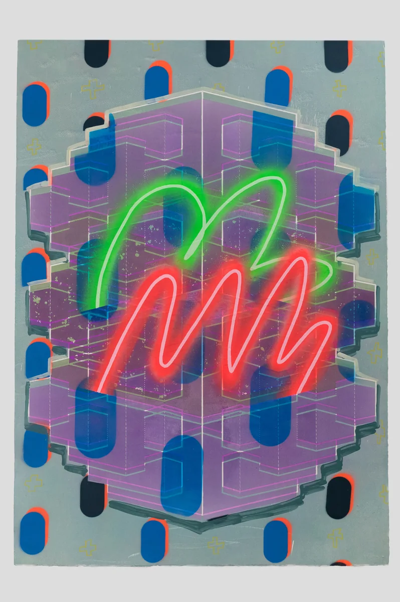
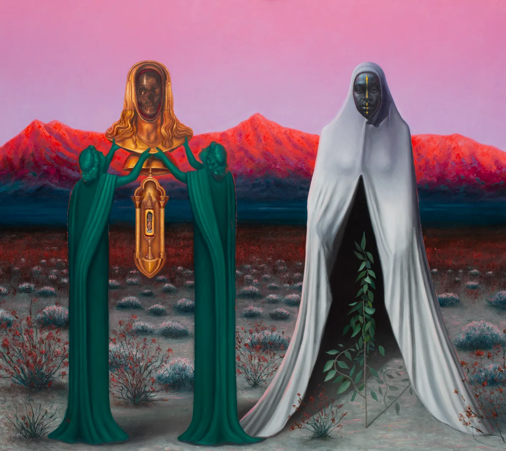
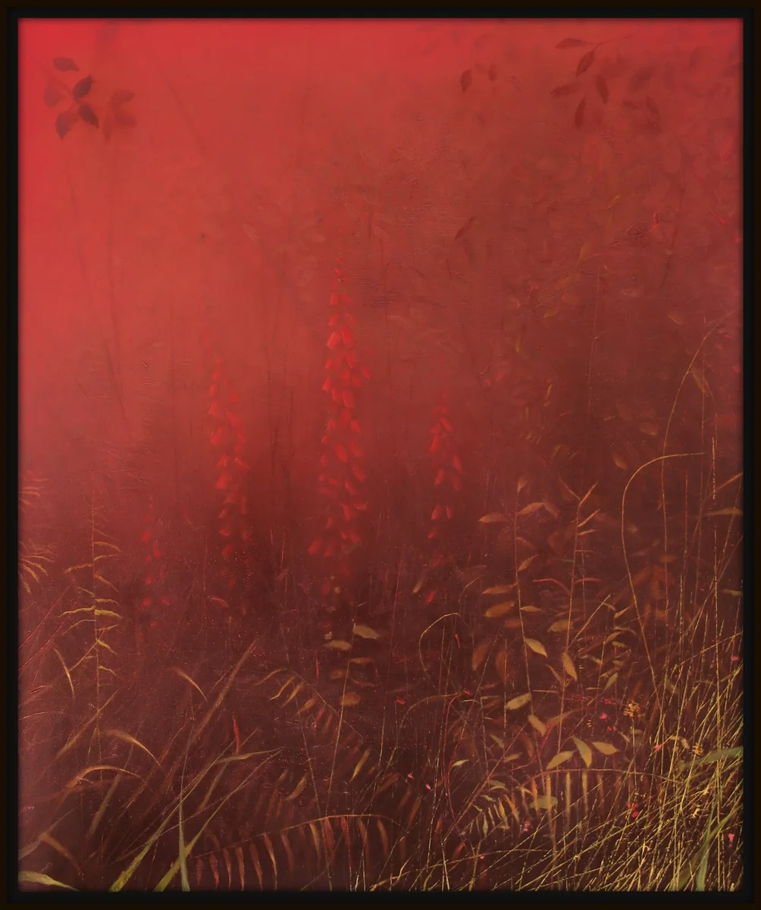
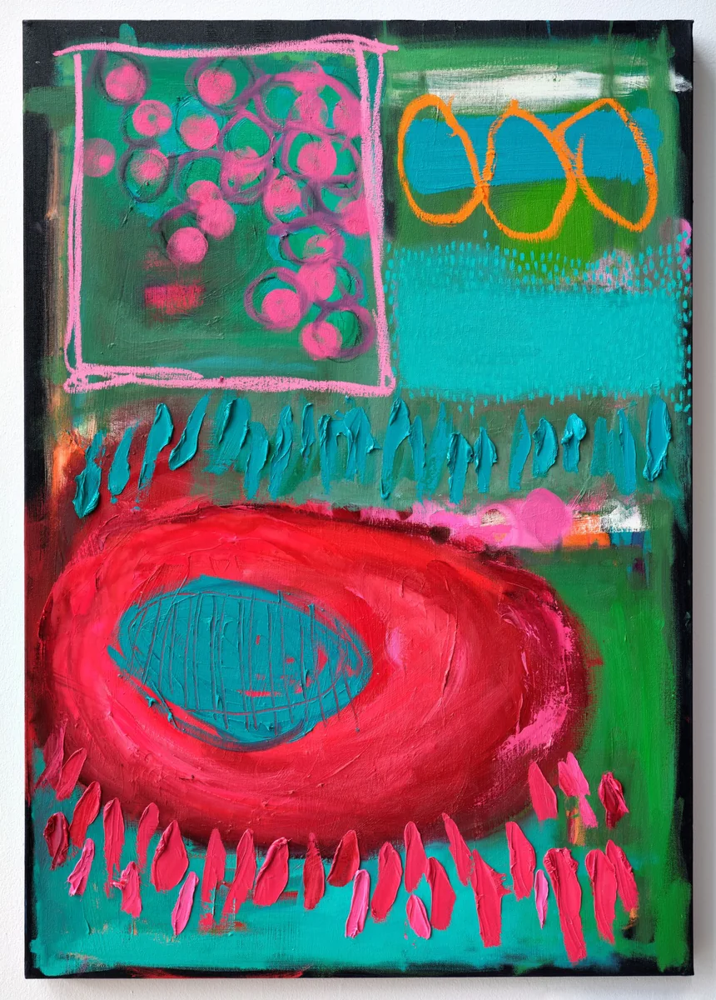
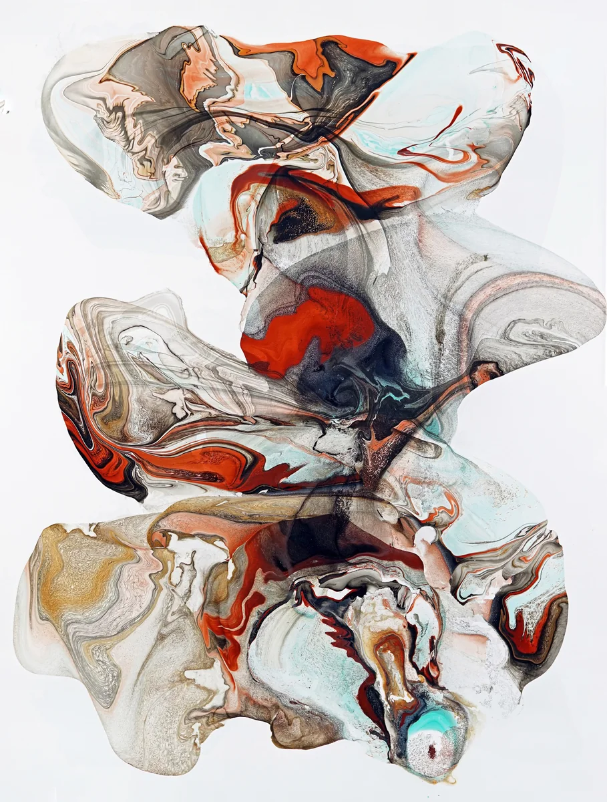
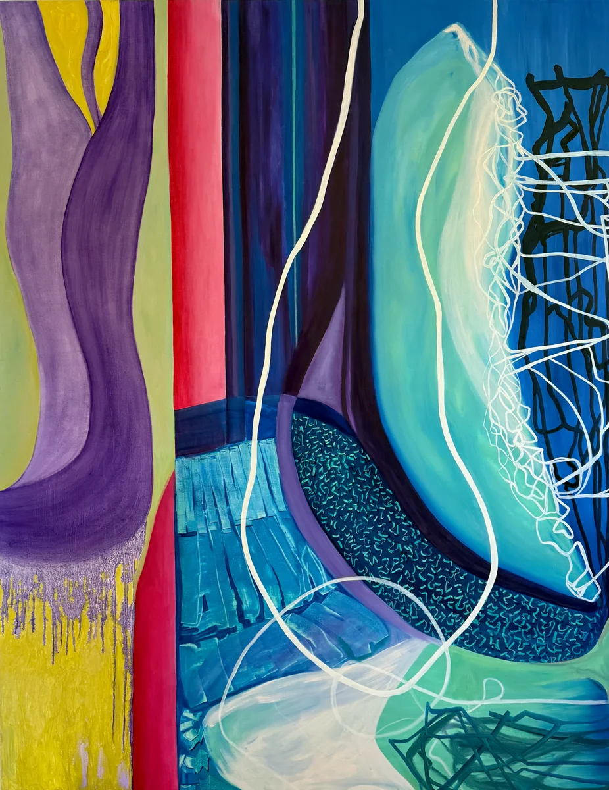

PlotArt · Artists’ Gallery
The Artists’ Gallery.
Explore original Irish art, meet the artists and discover their work. Available artwork pages show prices where supplied, with enquiries passed to the artist.
The collection
The first twenty-five galleries.
8 of 25 galleries open

Position 01: Leah Hewson
Painting, Prints, installation, murals, sculpture.

Position 02: PIGSY
Mixed Media Painting · Dublin

Position 03: Rasher Mark Kavanagh
Painter · Wicklow

Position 04: Daniel Chester
Painter · Leitrim

Position 05: Anna Marie Savage
Painter

Position 06: Fintan Whelan
Painter

Position 07: Nessa McCormack
Painter · Wicklow

Position 23: Karen Ebbs
Painter, Colourist, Sculptor, Immersive Installation
Founding positions
Twenty-five numbered positions, one for each Founding Artist. A gallery opens here when the artist’s work is published.
- 8 published
- 15 reserved
- 2 available
- Position 01: Leah Hewson
- Position 02: PIGSY
- Position 03: Rasher Mark Kavanagh
- Position 04: Daniel Chester
- Position 05: Anna Marie Savage
- Position 06: Fintan Whelan
- Position 07: Nessa McCormack
- Position 08: Reserved
- Position 09: Reserved
- Position 10: Reserved
- Position 11: Reserved
- Position 12: Reserved
- Position 13: Reserved
- Position 14: Reserved
- Position 15: Reserved
- Position 16: Reserved
- Position 17: Reserved
- Position 18: Reserved
- Position 19: Reserved
- Position 20: Reserved
- Position 21: Reserved
- Position 22: Reserved
- Position 23: Karen Ebbs
- Position 24: Available
- Position 25: Available
For artists
An invitation to join PlotArt.
We welcome applications from artists based or working on the island of Ireland.
Applications open